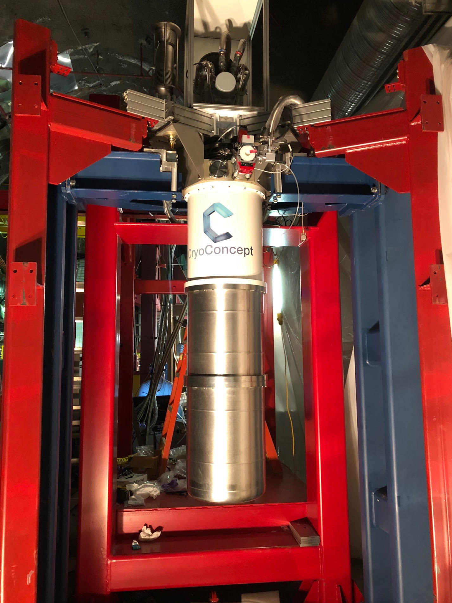
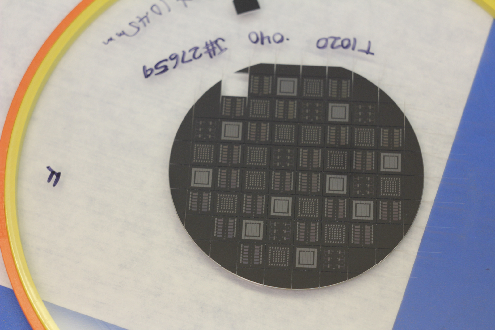
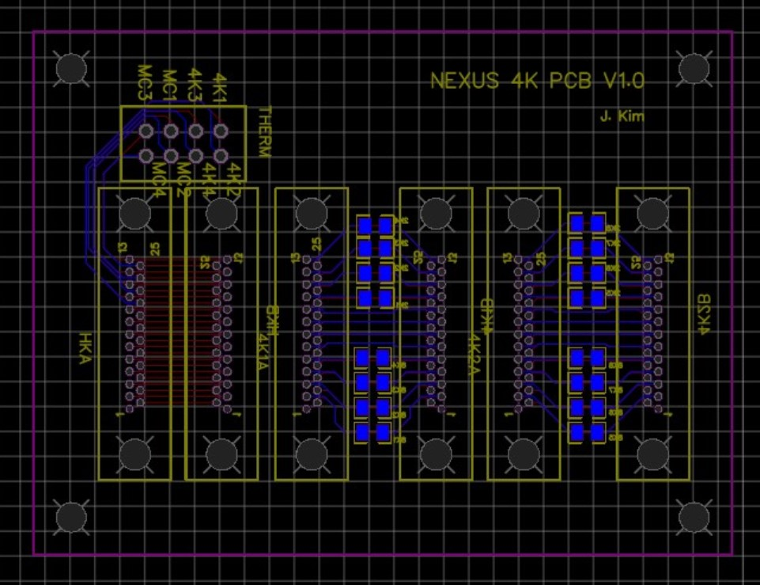

Background
The team at Northwestern for the research project (SuperCDMS) I was working with was in the process of building a completely new underground facility at Fermilab for dark matter detection. SuperCDMS takes a TES (transition-edge sensor) approach to the dark matter search – when the TES/detector reaches 45 mK, it is superconducting and can detect any small change in temperature, which is ideal for detecting dark matter. The equipment is composed of cans, arranged like a Russian doll, where each layer, or temperature stage, inside is colder. To detect such a small amount of energy at such low temperatures, the PCBs had to minimize parasitic resistances and/or be superconducting.
My role in the project was to design the PCBs at various temperature stages of the cryogenic equipment (also called “the fridge”) as well as to recreate the SQUID box, a box made of Cryoperm to hold and shield an array of sensitive magnetometer chips, which are shown below.
PCB Designs
One of the PCBs I drew for this project was the PCB at the 4K temperature stage, which simply allowed for 3 MDM cables to go through the layer, in addition to measuring the temperature at the stage. The MDM cables eventually to detectors, arrays of magnetometers called SQUID arrays, or thermometers for the different temperature stages.
Another PCB I drew for this project was the PCB at the mixing chamber stage (one stage colder than the 4K stage, around 1K) that brought the SQUID array and thermometers to the MDM connectors. The main requirement for this PCB design was minimal parasitic resistance due to magnetic field. Due to the precision required for the detection, all loops in the circuit had to be drawn as closely as possible on either side of the board to avoid producing magnetic fields, which would lead to parasitic resistances.

SQUID Mounting CAD